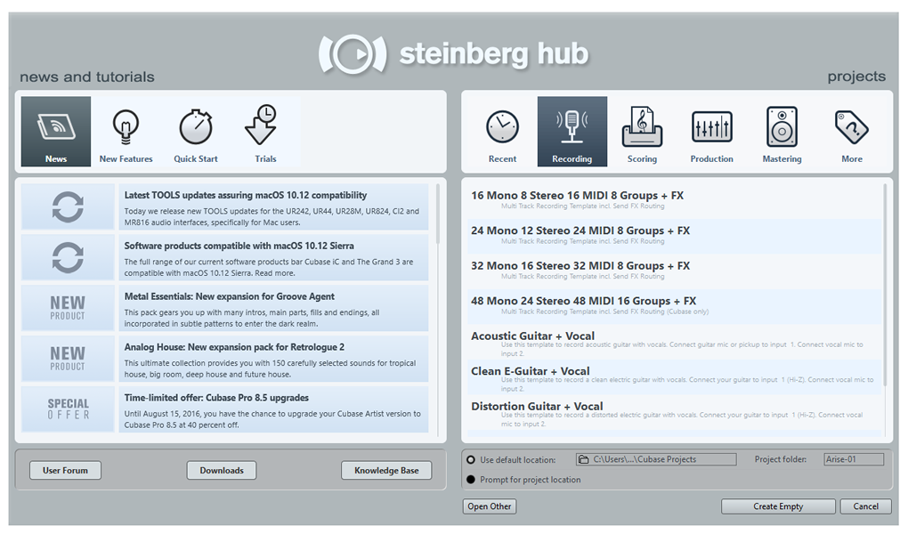
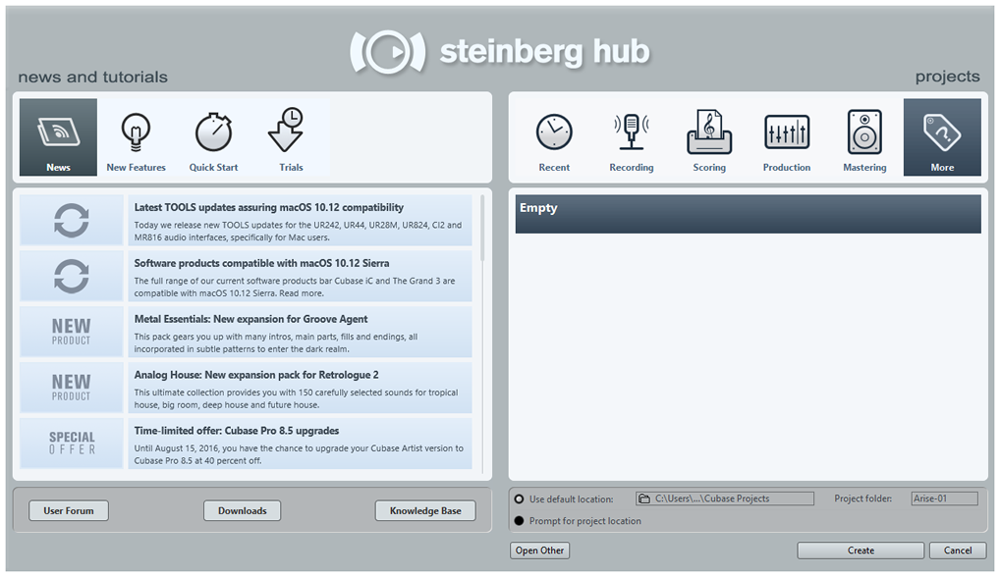

Creating a blank project in Cubase is very simple. Once you have opened Cubase you are presented with the start screen.

From this screen you are able to select either a template which comes with a set number of predefined features.

Under the "More" tab you will be able to create an Empty project. This will give you a completely empty project with no pre-created tracks or pre-set channel inserts.
From the bottom of the screen you are able to set the project folder, which is where all of your files and media will be stored.